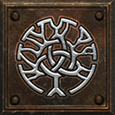
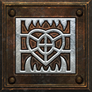
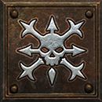

Supported companions gain more life, up to +100% from items. Shadow Warrior, Shadow Master, Ravens, bound demons, traps, Hydra, barriers and hirelings do not gain life from it. It adds no bodies.
+100% life modifier from items+#% to Summoned Companion LifeApplies to the supported skills below.
21 supported skills
Amazon
Necromancer
Druid

Oak Sage
Heart of Wolverine
Spirit of BarbsWarlock
Get this effect
Runewords
Gravewarden
Dol → Lum → Pul
3 sockets · Voodoo Heads / Shield
+30-40% to Summoned Companion LifeRequired level 45Magic & rare modifiers


Sheltering
Magic & rare prefix
+10-20% to Summoned Companion Life- Weapon
- Helm
- Amulet
- Voodoo Heads
- Grimoire
Excludes: Orb / Hand to Hand
Affix level 18 · Required level 15Preserving
Magic & rare prefix
+21-35% to Summoned Companion Life- Weapon
- Helm
- Amulet
- Voodoo Heads
- Grimoire
Excludes: Orb / Hand to Hand
Affix level 40 · Required level 34Undying
Magic & rare prefix
+36-50% to Summoned Companion Life- Weapon
- Helm
- Amulet
- Voodoo Heads
- Grimoire
Excludes: Orb / Hand to Hand
Affix level 60 · Required level 50Equipment

Marrowcall
Tomb Wand
+30-40% to Summoned Companion LifeRequired level 46
The Engorged Codex
Codex
+80% to Summoned Companion LifeRequired level 87
Pack-Mother's Hide
Mage Plate
+60% to Summoned Companion LifeRequired level 88Oil & gem crafts


Azure Oil
+ Perfect Skull
- Bow / Crossbow / Knife / Scepter / Staff / Wand / Axe / Mace / Club / Hammer / Sword / Spear / Polearm
- +36-50% to Summoned Companion Life